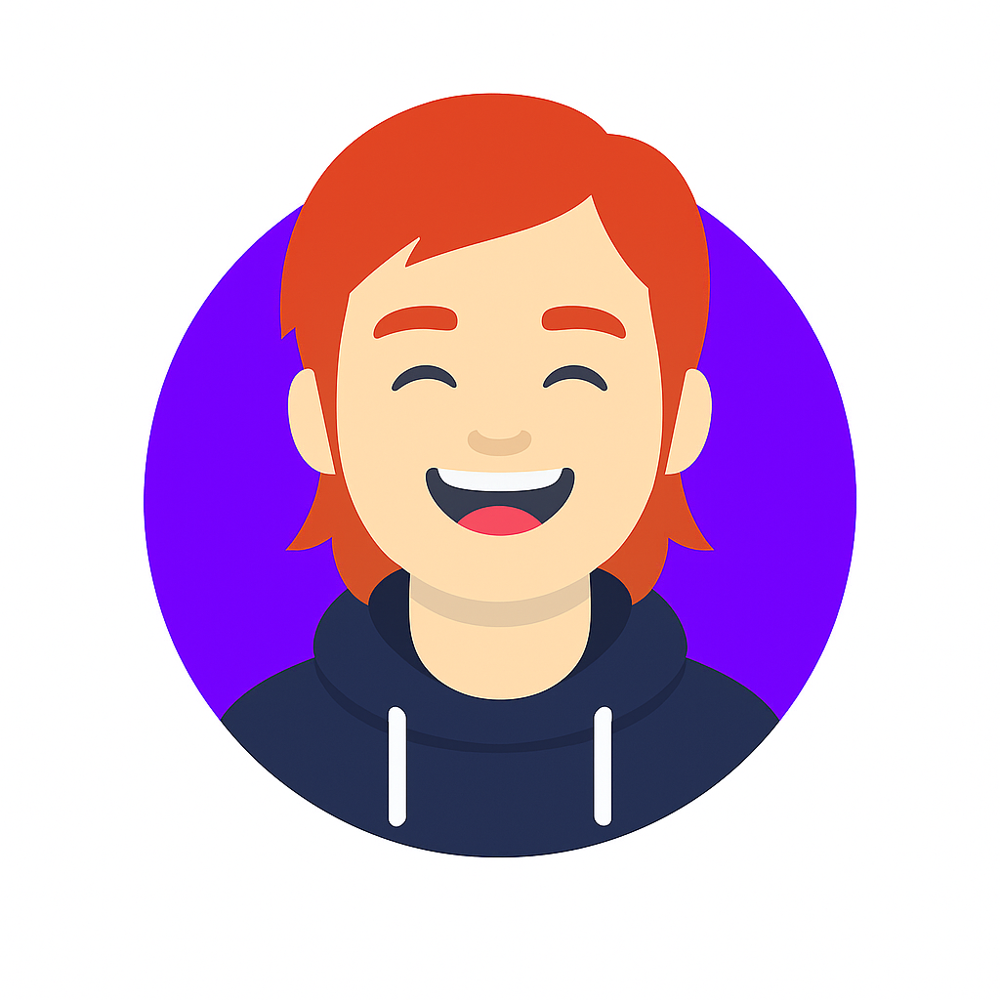

Fullstack Developer & Suporte TI
Construo sistemas web escaláveis do front ao back e ofereço suporte direto para resolver problemas de infraestrutura e rede.


Construo sistemas web escaláveis do front ao back e ofereço suporte direto para resolver problemas de infraestrutura e rede.
Sou um desenvolvedor fullstack em formação, atualmente no sexto semestre da graduação em Sistemas de Informação. Enquanto continuo aprendendo e desenvolvendo minhas habilidades em desenvolvimento web, atuo com suporte de TI, resolvendo problemas técnicos do dia a dia e garantindo que os sistemas funcionem corretamente. Tenho paixão por tecnologia, sou naturalmente curioso e estou sempre me desafiando a evoluir tanto no desenvolvimento quanto na infraestrutura.
Valorizo construir sistemas robustos, com foco em desempenho, segurança e organização de código.
Coisas que gosto de desenvolver:APIs, Bancos de Dados, XAML
Ferramentas & Tecnologias:C#
SQLServer
MySQL
FastAPI
Python
Gosto de construir soluções funcionais, com código limpo, lógica clara e interfaces intuitivas.
Coisas que gosto de projetar:Websites, Apps
Ferramentas & Tecnologias:HTML
CSS
JavaScript
React
Python
Ofereço suporte técnico para manter a estabilidade dos sistemas e ajudar usuários no dia a dia.
Coisas que gosto de fazer:Atendimento, Diagnóstico, Manutenção de Sistemas
Ferramentas & Tecnologias: Windows
Pacote Office
AnyDesk
Assistência Local
Redes
Aqui estão alguns projetos em que trabalhei. Quer ver mais? Mande um e-mail.

Gerenciador de Animes

Sistema de Academia

Cursos de Idiomas API